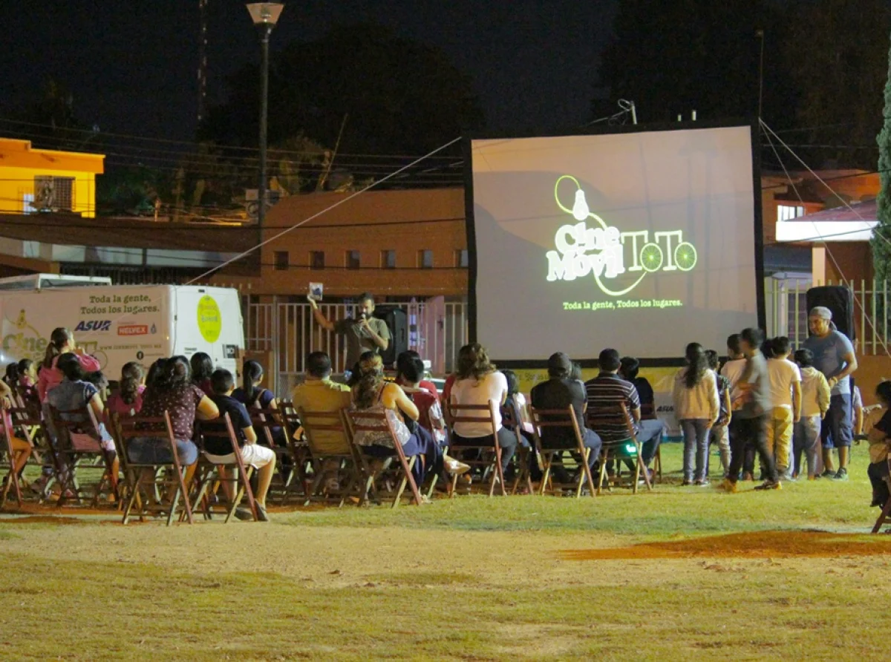

FESITVAL DE CINE AMBIENTAL

👨🏾💼 Organizador: Instituto Multimedia DerHumALC
📅 Fecha: 25 - 31 Agosto 2025
📍 Ubicación: Sarmiento 151, CABA, Argentina.
🧑🏼💻 Equipo: Julio Santucho, Florencia Santucho, Leandro Martínez, Maximiliano Rottjer y Natacha Bucatari.
🌍 Web Oficial: www.finca.imd.org.ar